选择工具
选择工具 Inspector 窗口包含以下两个主要部分，即 Grid Selection 和 Modify Tilemap 属性设置。
Grid Selection
使用选择工具可选择一个或多个单元格。Grid Selection Inspector 窗口显示选定位置处的瓦片的内容和属性。
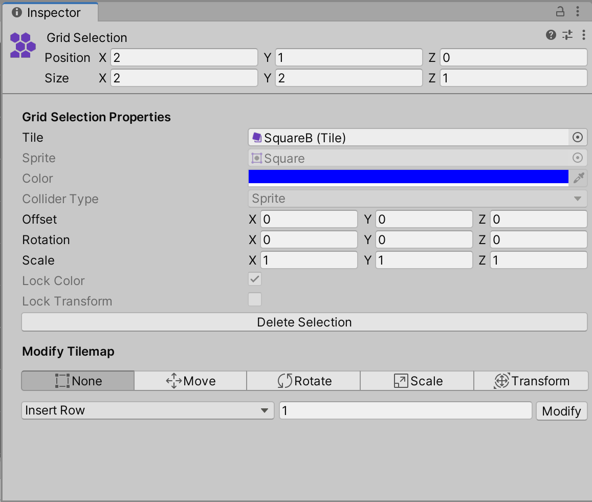
Grid Selection Inspector 窗口属性
Grid Selection 属性
| 属性 | 功能 |
|---|---|
| 瓦片 | 显示当前在选定单元格位置处设置的瓦片。如果选择多个单元格，并且它们显示相同瓦片，则会显示该瓦片的名称。如果选择具有不同瓦片的多个单元格，则此属性为空白。 |
| Sprite | 在上面的 Tile 属性中会显示分配给瓦片的精灵。如果选择具有相同瓦片的多个单元格，则这会显示相同精灵。如果选择具有不同瓦片的多个单元格，则此属性为空白。这在默认情况下显示为灰色，因此无法进行编辑。 |
| Color | 精灵的顶点颜色。如果启用了 Lock Color，则这显示为灰色，因此无法进行编辑。 |
| Collider Type | 选定位置处的瓦片的碰撞体类型。这在默认情况下显示为灰色，无法进行编辑。 |
| - | 注意：如果 Lock Transform 已启用且无法编辑，则以下变换（Position、Rotation、Scale）显示为灰色。 |
| Position | 输入每个轴的偏移（以单元格为单位）以沿相应轴移动瓦片精灵。瓦片在瓦片地图上的实际单元格位置保持不变。 |
| Rotation | 这会在选定位置处旋转一个或多个瓦片精灵。输入每个轴的旋转（以单元格为单位）以围绕相应轴旋转瓦片精灵。瓦片在瓦片地图上的实际单元格位置保持不变。 |
| Scale | 在选定位置处缩放一个或多个瓦片精灵的大小。输入每个轴的因子以沿相应轴缩放瓦片精灵。瓦片在瓦片地图上的实际单元格位置保持不变。 |
| Lock Color | 选择此项可防止更改瓦片的颜色，清除此项可启用 Color 属性。此属性显示为灰色时，其状态保持固定。请查看在瓦片资源中设置的 Tilemaps.TileFlags 以修改此属性。 |
| Lock Transform | 选择此项可防止更改瓦片的变换，清除此项可启用 Transform 属性。此属性显示为灰色时，其状态保持固定。请查看在瓦片资源中设置的 Tilemaps.TileFlags 以修改此属性。 |
| 删除选定项 | 选择此按钮可删除瓦片地图中的当前选定内容。 |
Modify Tilemap
此部分包含可用于修改瓦片地图和其中选定内容的各种功能和工具。这包括一个工具栏（显示可用于修改瓦片地图和瓦片地图中选定内容的可用功能），以及一个下拉菜单（提供用于将由空白单元格组成的行和列插入瓦片地图中或是从中移除行和列的不同选项）。
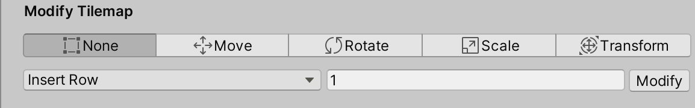
Modify Tilemap 部分中的可用功能。
辅助图标工具栏
从工具栏中选择功能可激活 Gizmos，它可修改瓦片地图中的选定内容。下表介绍每个选项，以及演示它们如何影响瓦片地图的示例链接。
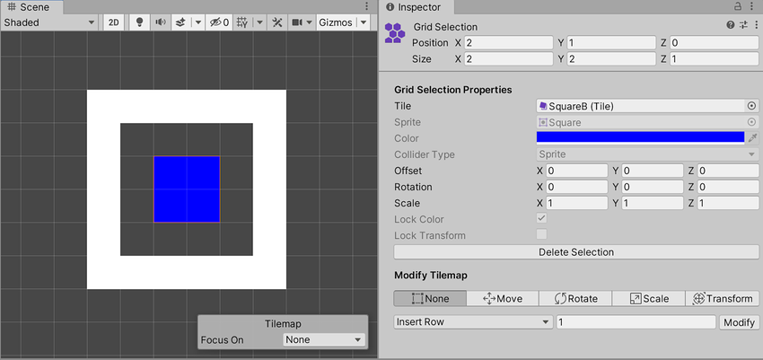
这是辅助图标功能示例所基于的默认瓦片地图。
| 辅助图标 | 功能 |
|---|---|
| None | Scene 视图中没有辅助图标处于激活状态或显示。 |
| Move | 在 Scene 视图中激活并显示一个 Move 辅助图标。使用此项可更改选定内容的偏移。 |
| Rotate | 在 Scene 视图中激活并显示一个 Rotate 辅助图标。使用此项可更改选定内容的旋转。 |
| Scale | 在 Scene 视图中激活并显示一个 Scale 辅助图标。使用此项可更改选定内容的缩放。 |
| Transform | 在 Scene 视图中激活并显示一个 Transform 辅助图标。使用此项可一次性同时更改选定内容的偏移、旋转和缩放。 |
辅助图标功能示例
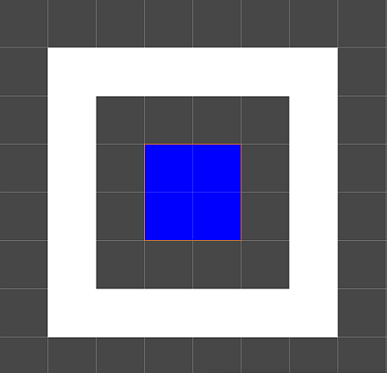
默认瓦片地图和选定单元格位置。没有辅助图标处于激活或可见状态。

左：默认瓦片地图和选定单元格位置。右：选定单元格位置的偏移已更改。

左：默认瓦片地图和选定单元格位置。右：选定单元格位置的旋转已更改。
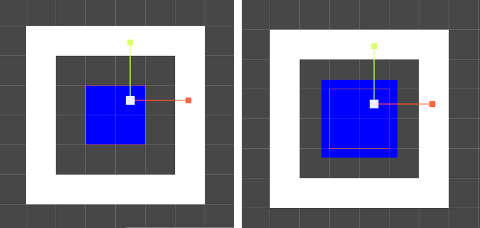
左：默认瓦片地图和选定单元格位置。右：选定单元格位置的缩放已更改。
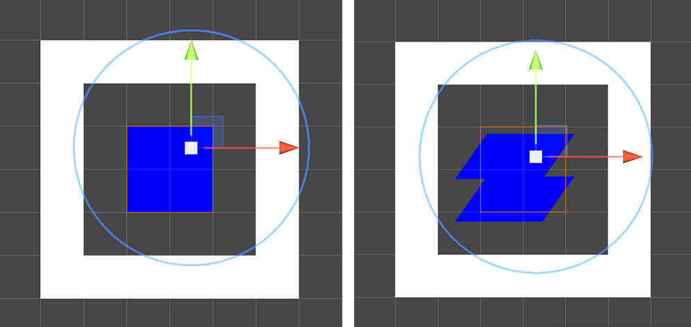
左：默认瓦片地图和选定单元格位置。右：选定单元格位置的偏移、旋转和缩放已修改。
Modify Tilemap 下拉选单扩展选项
该下拉菜单提供用于在瓦片地图上插入由空白单元格组成的行和列或是从中移除行和列的不同选项。选择下拉菜单选项之一后，在框中输入要插入或移除的行数或列数，然后选择 Modify。
下表介绍每个选项，以及演示它们如何影响瓦片地图的示例链接。
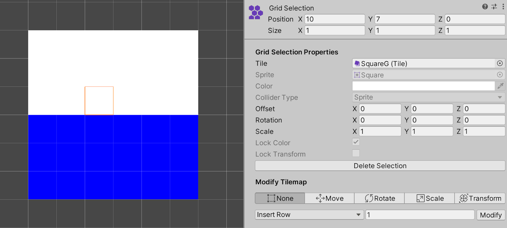
这是以下示例所基于的默认瓦片地图。
| 属性 | 功能 |
|---|---|
| Insert Row | 在选定位置插入一行或多行空白单元格。现有单元格沿正 y 轴向上移位。 |
| Insert Row Before | 在选定位置下方插入一行或多行空白单元格。现有单元格沿负 y 轴向下移位。 |
| Delete Row | 在选定位置及其上方移除一行或多行单元格。上方的现有单元格随后落下以填充已删除行留下的空间。 |
| Delete Row Before | 在选定位置下方移除一行或多行单元格。下方的现有单元格随后沿正 y 轴向上移位以填充已删除行留下的空间。 |
| Insert Column | 在选定位置插入一列或多列空白单元格。现有单元格沿正 x 轴向右移位。 |
| Insert Column Before | 在选定单元格的左侧插入一列或多列空白单元格。现有单元格沿负 x 轴向左移位。 |
| Delete Column | 在选定位置及其右侧移除一列或多列单元格。现有单元格随后沿负 x 轴向左移位以填充已删除列留下的空间。 |
| Delete Column Before | 在选定单元格的左侧移除一列或多列单元格。现有单元格沿正 x 轴向右移位以填充已删除列留下的空间。 |
不同下拉菜单选项的示例
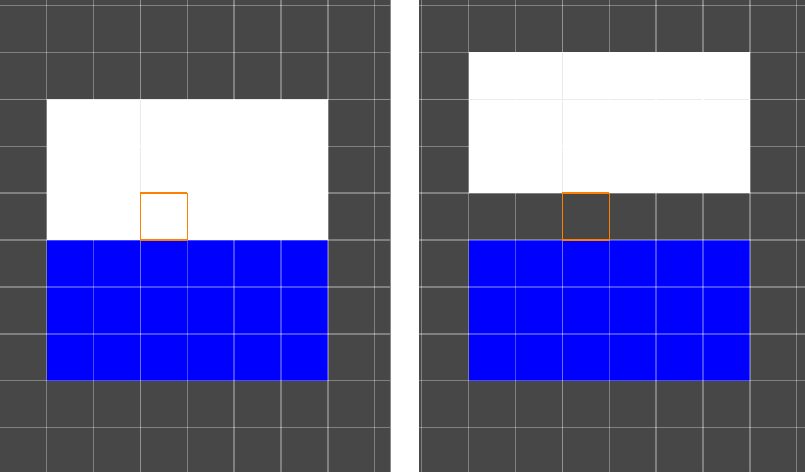
左：___默认瓦片地图和选定单元格位置。右：___Insert Row。
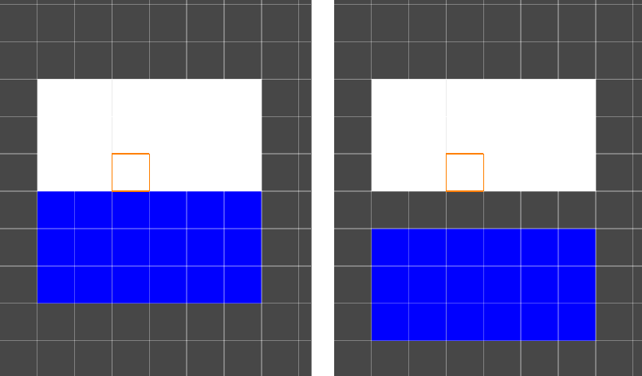
左：___默认瓦片地图和选定单元格位置。右：___Insert Row Before。
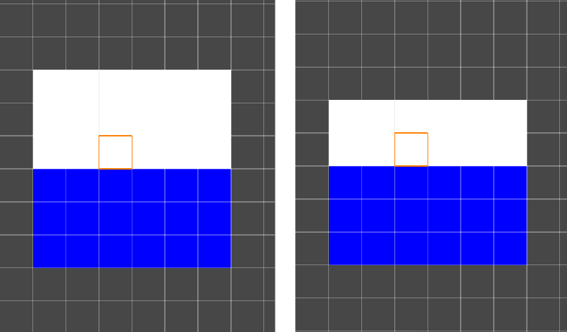
左：___默认瓦片地图和选定单元格位置。右：___Delete Row。
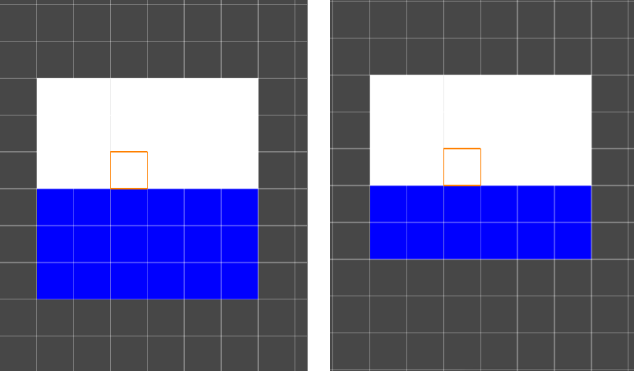
左：___默认瓦片地图和选定单元格位置。右：___Delete Row Before。

左：___默认瓦片地图和选定单元格位置。右：___Insert Column。
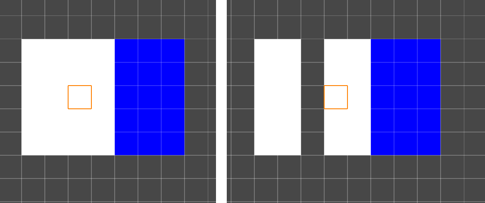
左：___默认瓦片地图和选定单元格位置。右：___Insert Column Before。
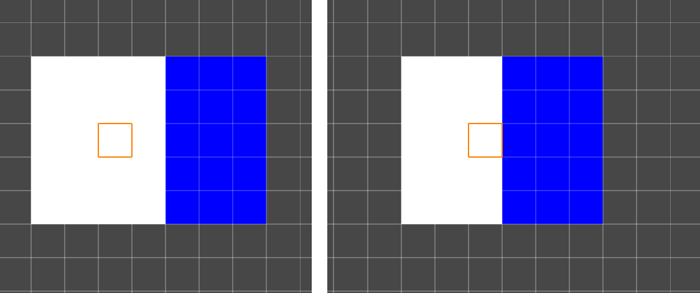左：___默认瓦片地图和选定单元格位置。右：___Delete Column。

左：___默认瓦片地图和选定单元格位置。右：___Delete Column Before。
多单元格选择
如果选择了多个单元格，则最左下方的单元格是应用 Modify Tilemap 选项时的主参考点。请参阅以下选择多个单元格，然后修改瓦片地图的示例。
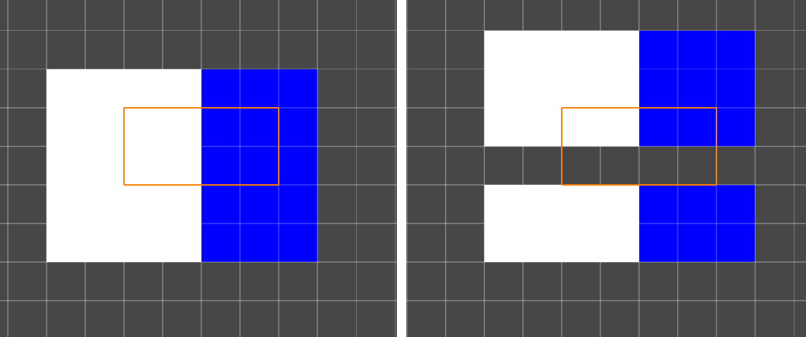
左：___选择了多个单元格的默认瓦片地图。Right：___Insert Row。
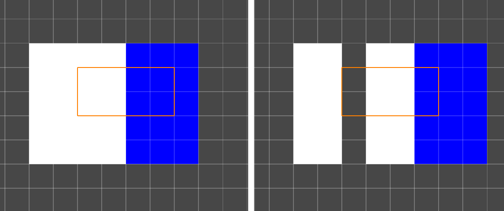
左：___选择了多个单元格的默认瓦片地图。Right：___Insert Column。
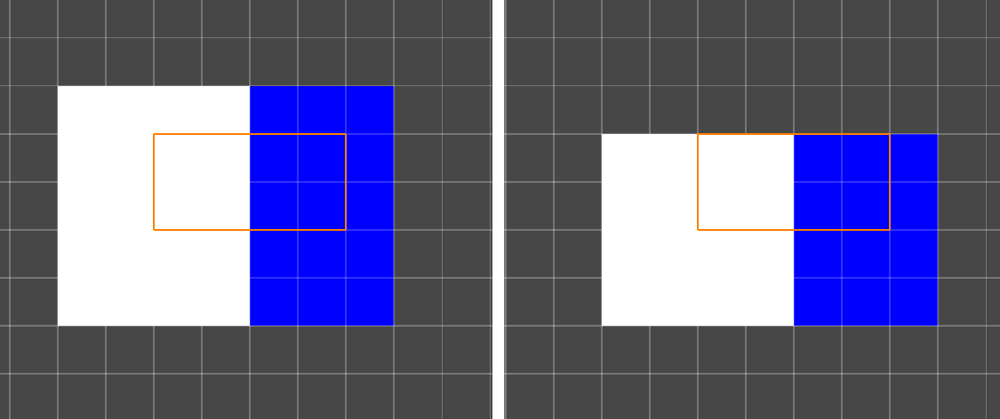
左：___选择了多个单元格的默认瓦片地图。Right：___Delete Row。
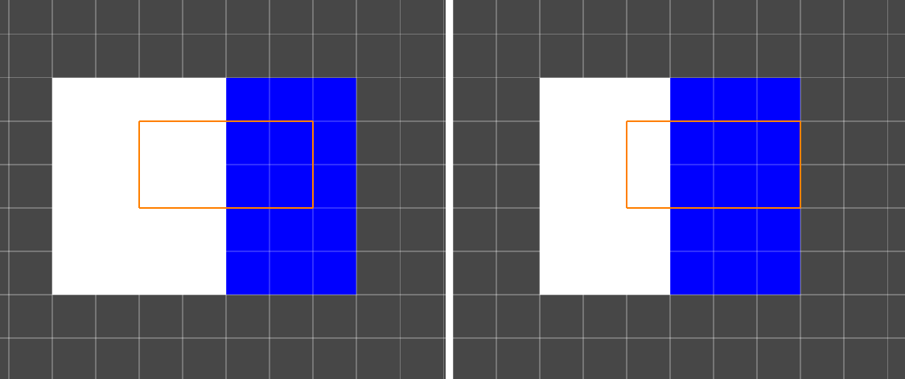
左：___选择了多个单元格的默认瓦片地图。Right：___Delete Column。
- 2020–08–17
- 2020–01–07
- 更新了 Unity 中的选择工具功能 2020.1 NewIn20201